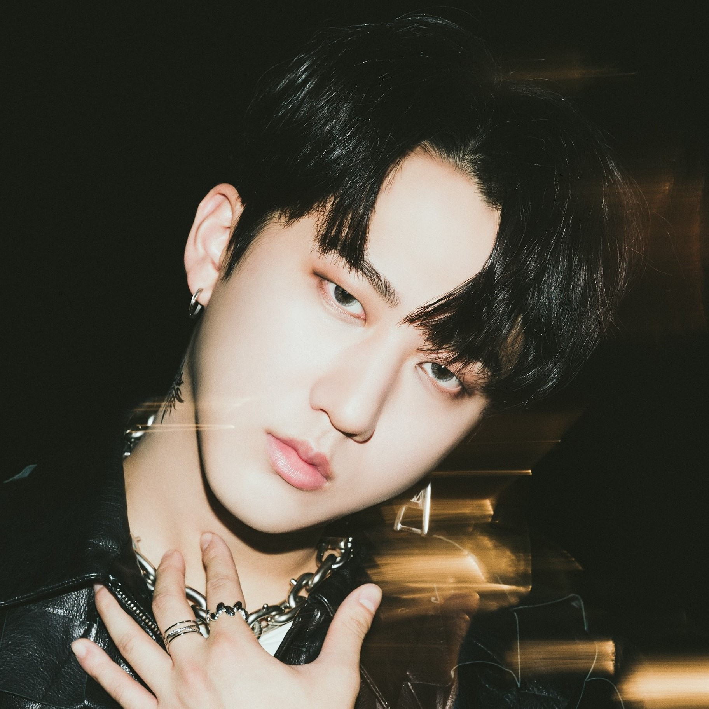
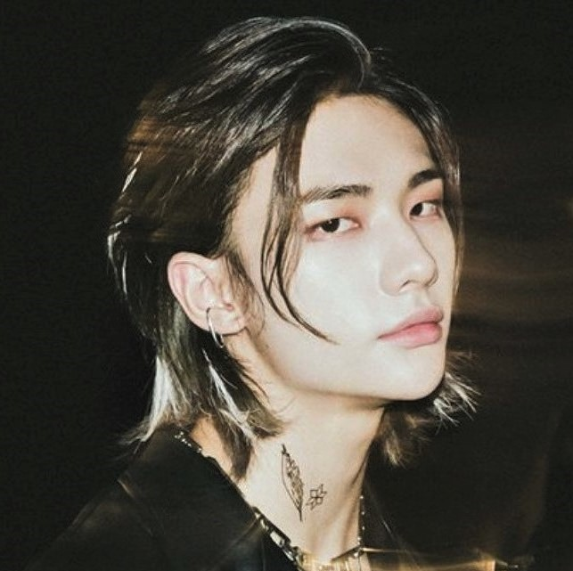
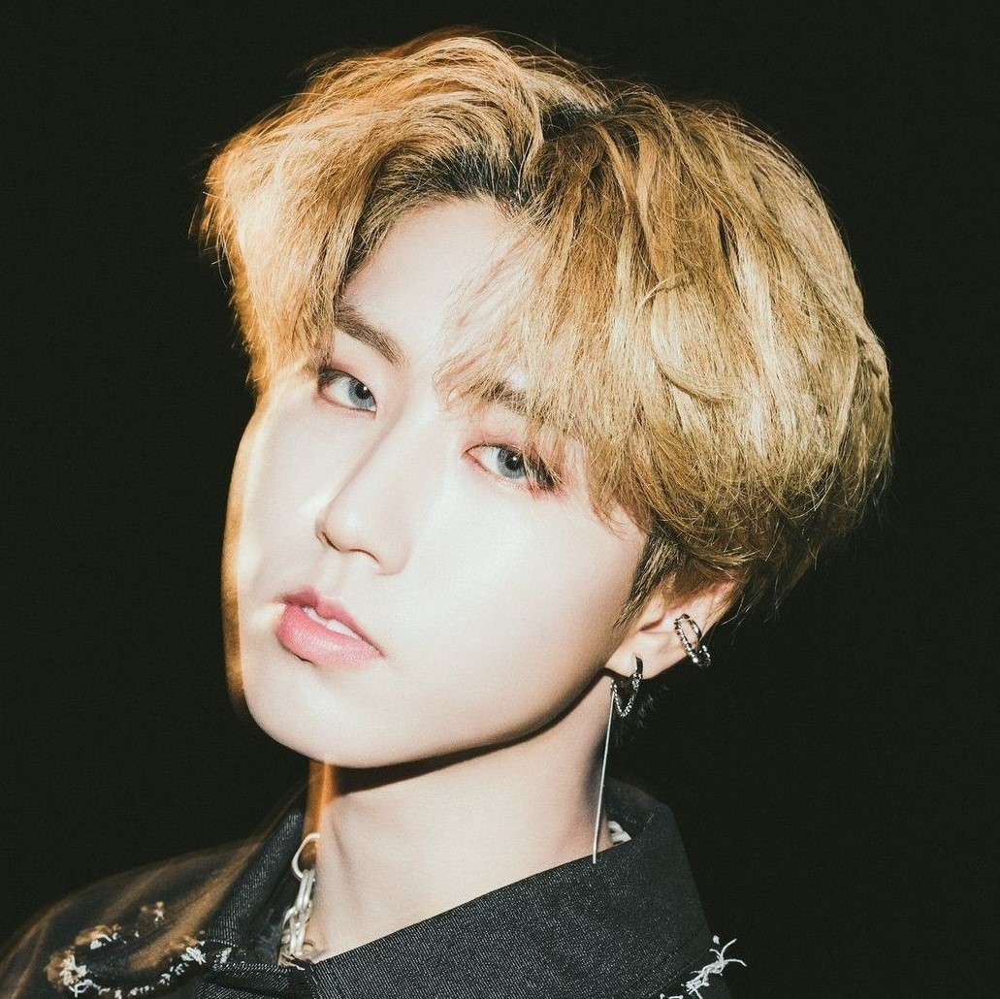
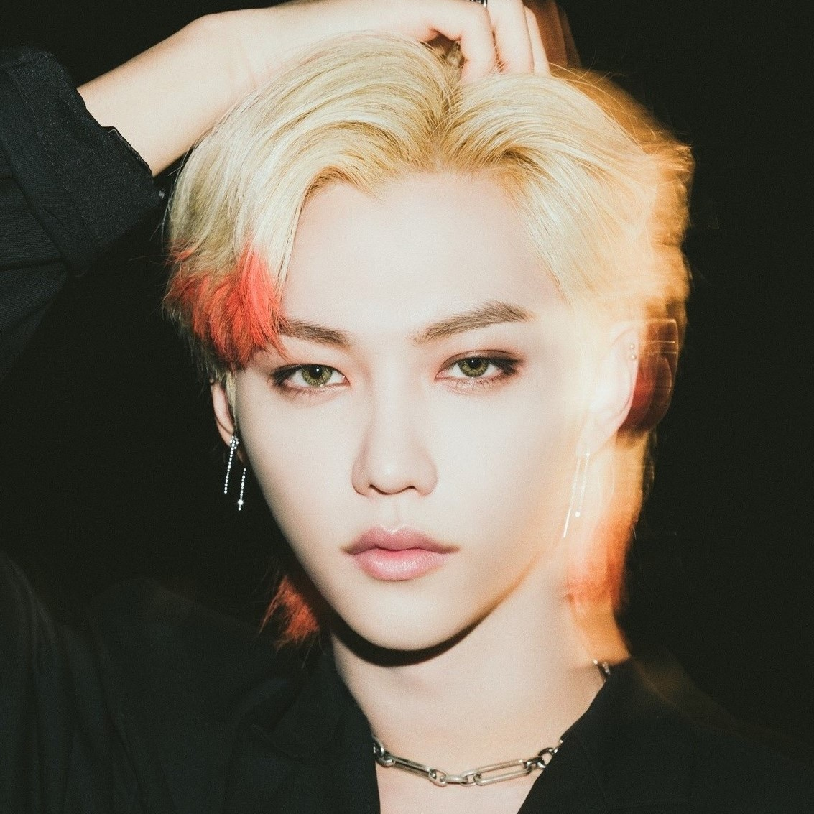
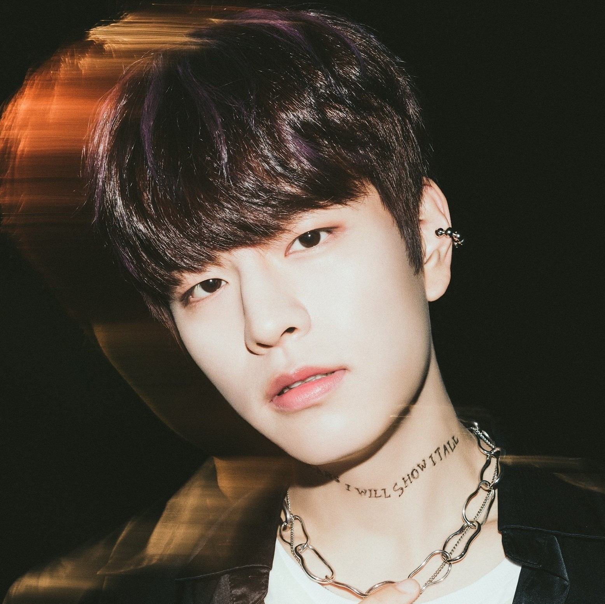
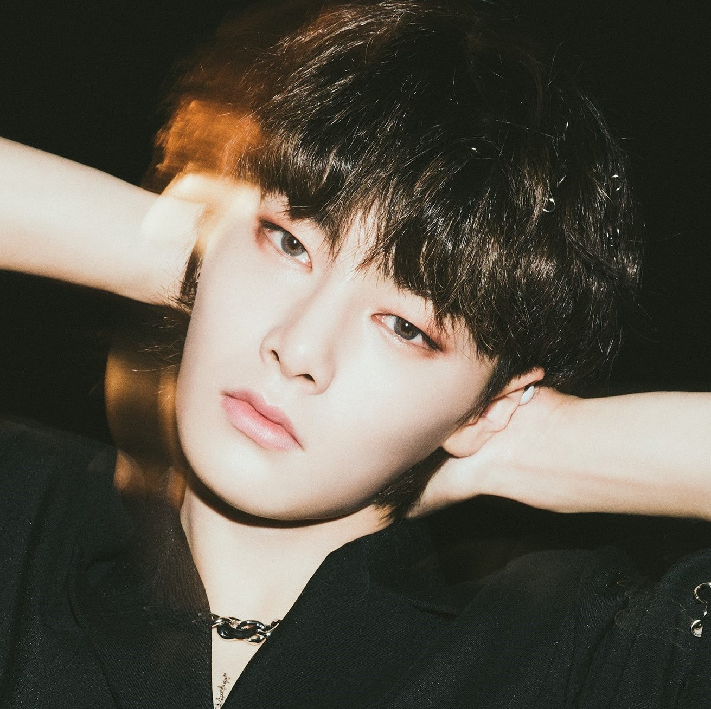

Stray Kids

Background
Stray Kids, also referred to as SKZ, is an 8 member K-Pop group
from South Korea. They were formed through a show
of the same name, Stray Kids, back in late 2017.
They officially debuted on March 25, 2018, with an album titled "I am NOT"
and have since had multiple
releases. Their songs are mostly self-produced by 3 of their members (referred to as 3RACHA):
Bang Chan, Changbin, and Han, who were together before Stray Kids were formed. 3RACHA alone have released 3
mixtapes
and over 25 songs. Stray Kids as a whole currently have over 125 songs, however this is not including
their "unofficial" songs,
which increases that number quite a bit. They have released over 50 music videos
along with a variety of other content, including things
such as SKZ-TALKER, SKZ-PLAYER, SKZ-RECORD, dance practices, and more.
This is only a small amount of what encompasses
Stray Kids, so for more information/to look more into them,
here is a link to their website (or you can click on their logo at the top of this page)!
Main Releases (from November 2017 to August 2021)
Awards
2018
- Rookie of the Year -- Asia Artist Awards
- Best New Male Artist -- Genie Music Awards
- Best New Male Artist -- Mnet Asian Music Awards (MAMA)
- New Hallyu Rookie Award -- Soribada Best K-Music Awards
- Next Leader -- The Fact Music Awards
2019
- Groove Award -- Asia Artist Awards
- Star15 Popularity Award -- Asia Artist Awards
- New Artist of the Year -- Gaon Chart Music Awards
- Best New Artist -- Golden Disc Awards
- Rookie of the Year -- Seoul Music Awards
- Rising Hot Star Award -- Soribada Best K-Music Awards
- Year Dance Performer -- The Fact Music Awards
- New Star Award -- Asia Model Awards
- Male Rookie Idol Award -- Korean First Brand Awards
- Rookie of the Year -- Soompi Awards
- Global Rookie Top 5 -- V Live Awards
- Global Artist Top 12 -- V Live Awards
2020
- World Rookie of the Year -- Gaon Chart Music Awards
- Global Hot Trend Award -- Soribada Best K-Music Awards
- Global Hottest Award -- The Fact Music Awards
- Best Korean Act -- MTV Europe Music Awards
2021
- The Hot Performance of this Year -- Gaon Chart Music Awards
- Best Performance Award -- Golden Disc Awards
- Main Award (Bonsang) -- Seoul Music Awards
- Hallyu Global Fans' Choice (Top 10) -- HallyuLife Awards
- Hot Trend -- Korean First Brand Awards
Members
 |
 |
 |  |
|  |  |  |  |

|  |
|---|
My Reflection!